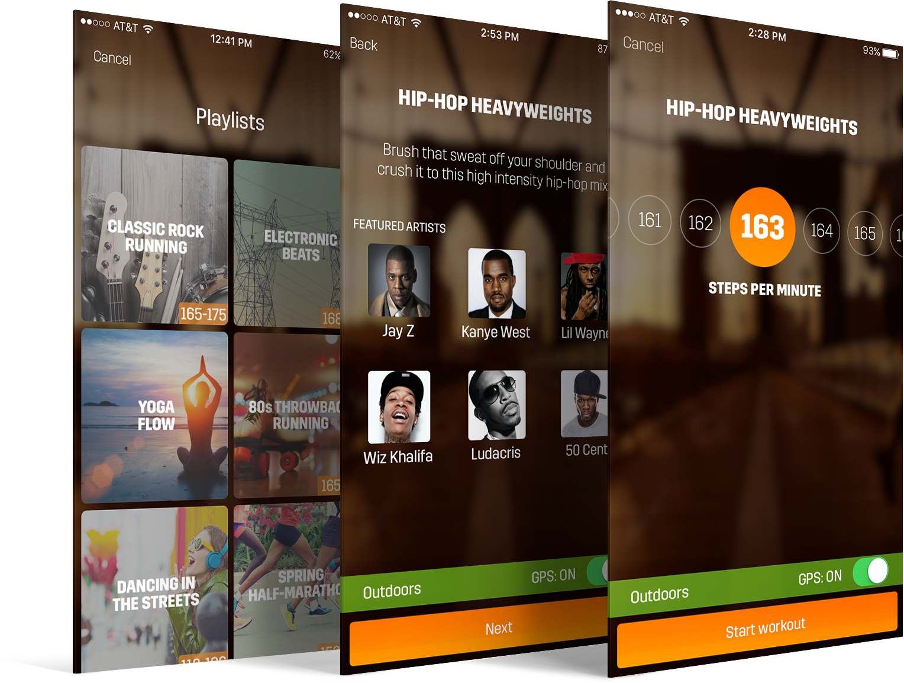

Spring: A rhythm-based music service for exercise (iOS)
Problem
Some users unsatisfied with the existing radio-style listening experience, which relies on user ratings + algorithm.
Goal
Through data and user research, understand pain points associated with the radio experience.
Solution
It was concluded that users who positively rated artists and songs were disappointed with the frequency of hearing what they liked. Furthermore, data indicated that user satisfaction was equivalent for listeners who did not make lots of ratings.
Curated and themed workout playlists were designed. Playlists have no user rating component and do not rely on the song picking algorithm.